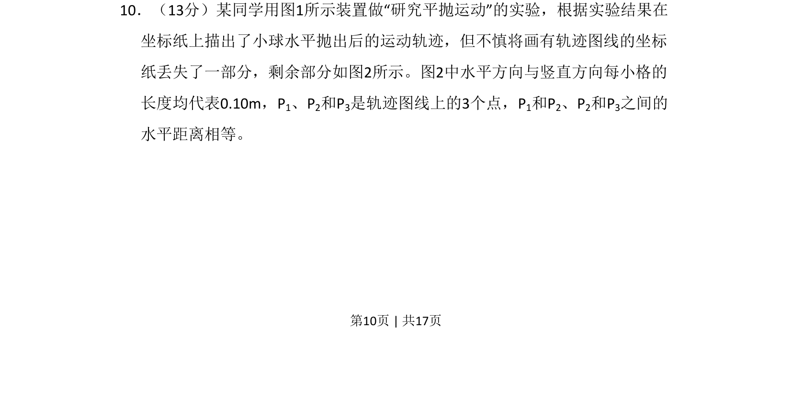
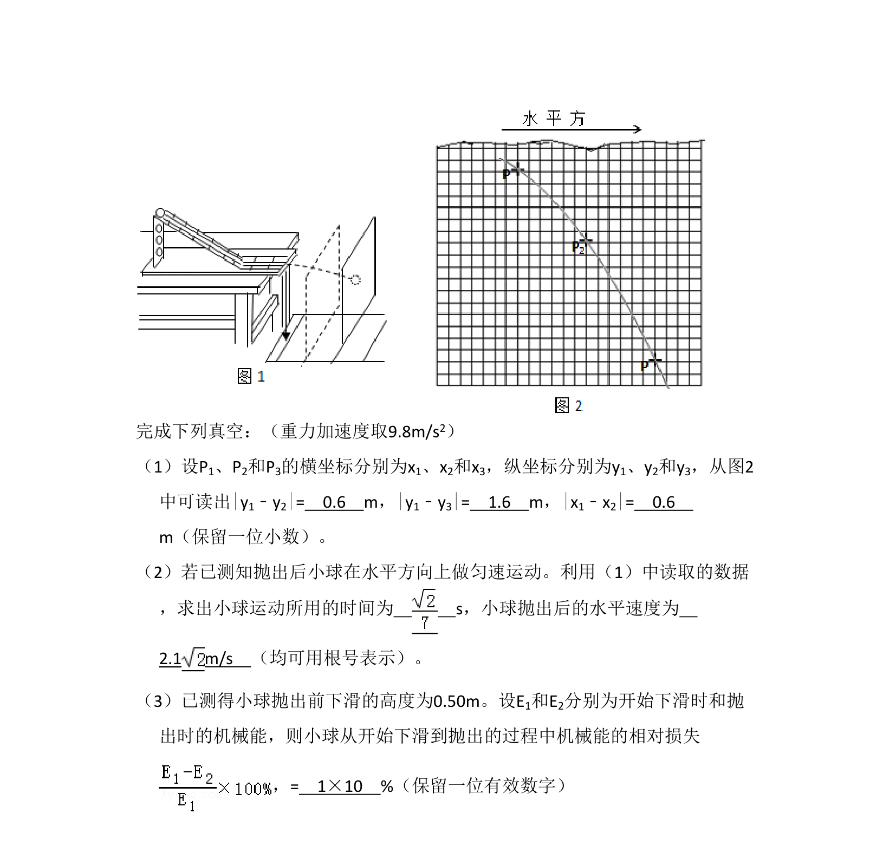
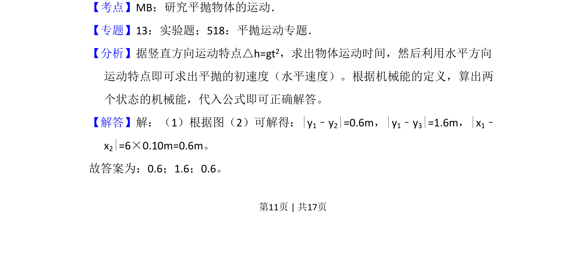
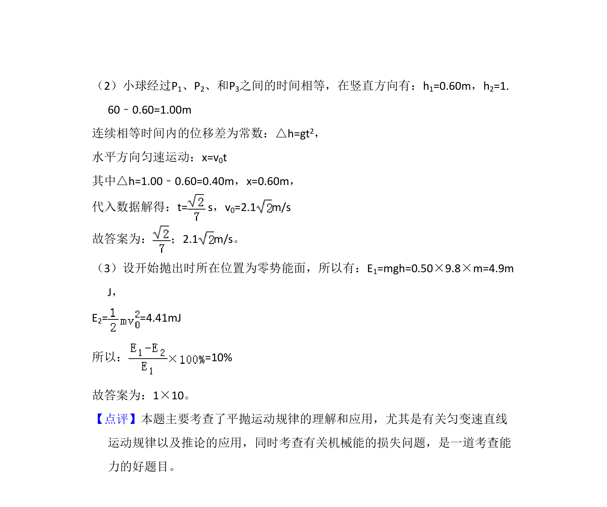

考点：抛物线 坐标测量 运动的合成与分解 数据推理


通过分析平抛运动轨迹的坐标纸残图，利用水平与竖直方向分运动规律进行相关计算。


📄 原 PDF 第 10 页：
素材/真题/吉林/2008-2024·（吉林）物理高考真题/2009年高考物理试卷（全国卷Ⅱ）（解析卷）.pdf
10．（13分）某同学用图1所示装置做“研究平抛运动”的实验，根据实验结果在 坐标纸上描出了小球水平抛出后的运动轨迹，但不慎将画有轨迹图线的坐标 纸丢失了一部分，剩余部分如图2所示。图2中水平方向与竖直方向每小格的 长度均代表0.10m，P1、P2和P3是轨迹图线上的3个点，P1和P2、P2和P3之间的 水平距离相等。